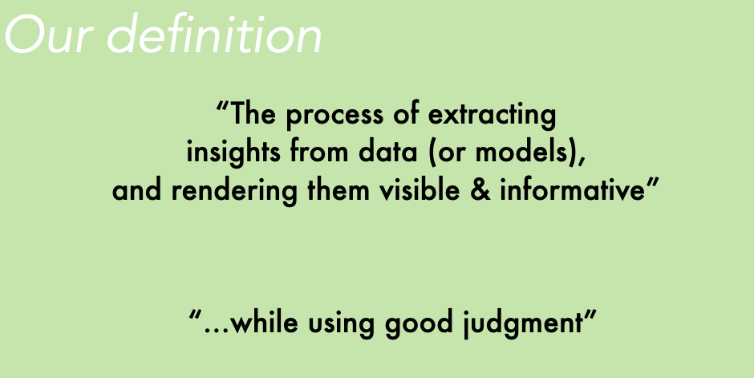
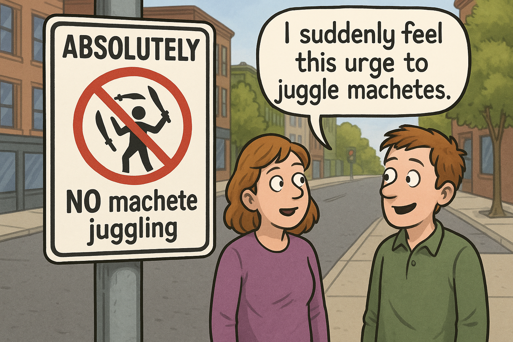

Data Visualization with R and ggplot
Overview of this class
Some say visualization is what you do when you “form a mental picture of something” or when you try to represent an object or a situation and “render it visible.” That’s fine, but this will be our definition:

Creating effective visualizations of social and political data can help you discover and communicate new insights, and this website contains much of the material I use in my course designed to help students become better communicators with R. Most of what students would need to do can be accomplished with ggplot2.
If I had to compress the content of this course into just three lessons, I would say this:
Lesson 1: Think of output from statistical models as data. Summarize it visually.
There is a lot we can do after extracting relevant information from statistical models. Start asking yourself questions similar to these:
- What is the distribution of predictions when you change your machine learning algorithm?
- How stable are coefficients from linear models across specifications?
- What do we lose/gain when we display aggregates (e.g. average marginal effects) rather than individual data-points?
Lesson 2: The first chart you produce is your “draft zero”.
Iterate and create reasonably clear and self-contained visual exhibits.
Lesson 3: Just because you have a tool (R package / R skills) in your hands, doesn’t mean you have to use it.
Sometimes I show students a picture with a sign “No juggling of machetes”. After reading that sign, does anyone feel tempted to do what they are asked not to do? Maybe.

But even when we have the skills to do certain things, we should only be applying our skills when appropriate.
Students are encouraged to think creatively about visualizing different types of information and data. Significant coding experience with R is expected, but prior knowledge of issues related to design, style, and principles of data visualization is not required.
After taking this course, students will be expected to be able to present real data clearly and to identify strengths and weakness of existing data displays and dashboards.
We will be graphing various types of evidence including:
- macro-economic data
- public opinion data
- summaries of statistical models
- quantitative representations of text (e.g. content of social media post and the accompanying metadata)Course outline
Introductory topics
- What works and what to avoid even if it works?
- Principles of visual perception and effect communication
- Getting familiar with ggplot
Using ggplot for data visualization
- Toplines, cross-tabs
- Geometries, statistics and coordinates
- Facets, themes
- Refining plots
- 3-way cross-tabs
- HeatmapsVisualizing output from statistical models
- Coefficients and uncertainty
- Predicted probabilities, marginal effects, and interactions
- Model performance (in-sample and out-of-sample comparisons)
- Machine learning output (regression trees, most important variables, etc.)If you are taking this class for credit with me, these are the main expectations:
Assignments
- Create your own dataset
- Create your own dataset. It needs to have at least one of these 3 attributes
- Multiple levels (at least 2).
- Original topic, subject or angle.
- Impressive scope
- Create your own dataset. It needs to have at least one of these 3 attributes
- Final project
- Form a group of 2-3 students
- Prepare a compelling data visualization